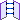
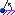
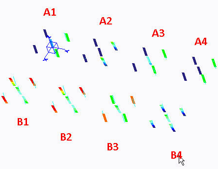

练习: 创建受力和刚性连接
目标
成功完成此练习后，您将能够：
- 创建受力连接。
- 创建刚性连接。
假定背景
在 Creo Simulate 中，有多种可用来连接不同模拟特征的元素类型。尽管其有相同的目标，但是其中的某些连接具有不同的行为和目的，且结果会受到影响。清楚了解其目的将使您能够更精通 Creo Simulate 的功能。
在本练习中，您将检查在使用模拟特征之间的刚性受力连接时，对位移结果的影响。所使用的模型显示如下。

模型未反映出工程问题。其说明通过刚性或受力连接来连接模拟特征的行为。
在所有 A 位置和 B 位置，纵梁已在基准点之间进行定义。这是因为，在 Creo Simulate 结果窗口中，您只能查看模拟特征的位移。
将使用受力连接对 A 位置处顶行的梁进行连接。其中的某些受力连接先前已进行了定义。您将在 A1 和 A4 定义连接，但您可编辑并检查任意其他受力连接。
将使用刚性连接对 B 位置处底行的梁进行连接。可以在 B1、B2 和 B3 位置定义刚性连接。位置 B4 先前已定义。
在 B3 和 B4 位置，已定义了基础弹簧理想化。它们将充当约束。附加约束将在所有点位置定义。本练习中不存在载荷。您将定义某些前述的位移。其中的某些约束先前已定义。
“关闭窗口”(Close Window) “拭除未显示的”(Erase Not Displayed)
“拭除未显示的”(Erase Not Displayed) 
 Simulate_Modeling\WeightedLinks
Simulate_Modeling\WeightedLinks
 RIGID_AND_WEIGHTED_LINKS_B.PRT
RIGID_AND_WEIGHTED_LINKS_B.PRT
-
任务 1. 调查模型属性。
1. 单击“文件”(File) > “准备”(Prepare) > “模型属性”(Model Properties)。将出现“模型属性”(Model Properties) 对话框。
2. 审阅模型中所使用的单位。要关闭“模型属性”(Model Properties) 对话框，单击“关闭”(Close)。
-
任务 2. 在 A1 和 A4 位置定义受力连接。
1. 在 A1 位置定义受力连接。在功能区中，选择“精细模型”(Refine Model) 选项卡。
2. 从“连接”(Connections) 组中单击“受力连接”(Weighted Link)
 。将出现“受力连接定义”(Weighted Link Definition) 对话框。
。将出现“受力连接定义”(Weighted Link Definition) 对话框。
3. 按住 CTRL 键并在模型上选择点 PNT1、PNT2、PNT3 和 PNT4。这些在对话框的“独立侧”(Independent Side) 部分中列出。
4. 在“从属侧”(Dependent side) 部分中单击“点”(Point) 字段。在模型上，选择 PNT0。
5. 在“自由度”(Degrees of Freedom) 部分中，选择 Tx、Ty 和 Tz。
6. 单击“确定”(OK)。

受力连接已在 A2 和 A3 位置被定义。
7. 在 A4 位置定义受力连接。在功能区中，选择“精细模型”(Refine Model) 选项卡。
8. 从“连接”(Connections) 组中单击“受力连接”(Weighted Link)
。将出现“受力连接定义”(Weighted Link Definition) 对话框。
9. 按住 CTRL 键并在模型上选择点 PNT16、PNT17、PNT18 和 PNT19。这些在对话框的“独立侧”(Independent Side) 部分中列出。
10. 在“从属侧”(Dependent side) 部分中单击“点”(Point) 字段。在模型上，选择 PNT15。
11. 在“自由度”(Degrees of Freedom) 部分中，选择 Tx、Ty 并取消选择 Tz。
12. 单击“确定”(OK)。
-
任务 3. 在 B1、B2 和 B3 位置定义刚性连接。
1. 在 B1 位置定义刚性连接。在功能区中，选择“精细模型”(Refine Model) 选项卡。
2. 从“连接”(Connections) 组中单击“刚性连接”(Rigid Link) 。将出现“刚性连接定义”(Rigid Link Definition) 对话框。
3. 按住 CTRL 键并在模型上选择点 PNT20、PNT21、PNT22、PNT23 和 PNT24。这些在对话框的“参考”(References) 部分中列出。
4. 单击“确定”(OK)。
5. 在 B2 位置定义高级刚性连接。在功能区中，选择“精细模型”(Refine Model) 选项卡。
6. 从“连接”(Connections) 组中单击“刚性连接”(Rigid Link) 。将出现“刚性连接定义”(Rigid Link Definition) 对话框。
7. 从“类型”(Type) 下拉菜单中选择“高级”(Advanced)。
8. 在模型上选择点 PNT25。此点在对话框的“独立侧”(Independent side) 部分中列出。
9. 在“从属侧”(Dependent side) 部分中单击“点参考”(Points reference) 字段。按住 CTRL 键并在模型上选择点 PNT26、PNT27、PNT28 和 PNT29。
10. 校验在“自由度”(Degrees of Freedom) 部分中已选定所有选项。
11. 单击“确定”(OK)。
12. 在 B3 位置定义另一个高级刚性连接。在功能区中，选择“精细模型”(Refine Model) 选项卡。
13. 从“连接”(Connections) 组中单击“刚性连接”(Rigid Link) 。将出现“刚性连接定义”(Rigid Link Definition) 对话框。
14. 从“类型”(Type) 下拉菜单中选择“高级”(Advanced)。
15. 在模型上选择点 PNT30。此点在对话框的“独立侧”(Independent side) 部分中列出。
16. 在“从属侧”(Dependent side) 部分中单击“点参考”(Points reference) 字段。按住 CTRL 键并在模型上选择点 PNT31、PNT32、PNT33 和 PNT34。
17. 在“自由度”(Degrees of Freedom) 部分中取消选择 Rx、Ry 和 Rz。
18. 单击“确定”(OK)。
-
任务 4. 在 A1 位置和所有 B 位置定义约束。
1. 在 A1 位置定义前述的位移约束。在功能区中，选择“主页”(Home) 选项卡。
2. 在“约束”(Constraints) 组中单击“位移”(Displacement)
 。将出现“约束”(Constraint) 对话框。
。将出现“约束”(Constraint) 对话框。
3. 从“参考截面”(References Section) 下拉菜单中选择“点”(Points)。
4. 按住 CTRL 键并在模型上选择点 PNT1 和 PNT4。
5. 在“平移”(Translation) 部分中，单击“规定的平移”(Prescribed Translation)
 用于 Y 平移。在“Y 平移”(Y Translation) 字段中键入 3。
用于 Y 平移。在“Y 平移”(Y Translation) 字段中键入 3。
6. 在“旋转”(Rotation) 部分中，单击“固定的旋转”(Fixed Rotation)
 用于 X、Y 和 Z 旋转。
用于 X、Y 和 Z 旋转。
7. 单击“确定”(OK)。
8. 在所有 B 位置定义前述的位移约束。在功能区中，选择“主页”(Home) 选项卡。
9. 在“约束”(Constraints) 组中单击“位移”(Displacement)
。将出现“约束”(Constraint) 对话框。
10. 从“参考截面”(References Section) 下拉菜单中选择“点”(Points)。
11. 按住 CTRL 键并在模型上选择点 PNT20、PNT25、PNT30 和 PNT35。
12. 在“平移”(Translation) 部分中，单击“规定的平移”(Prescribed Translation)
用于 X、Y 和 Z 平移。在 X、Y 和 Z 平移字段中键入 1。
13. 在“旋转”(Rotation) 部分中，单击“规定旋转”(Prescribed Rotation)  用于 X、Y 和 Z 旋转。在 X、Y 和 Z 旋转字段中键入 10。
14. 单击“确定”(OK)。在“警告”(Warning) 对话框中单击“确定”(OK)。
-
任务 5. 定义并运行静态分析。
1. 在功能区中，选择“主页”(Home) 选项卡。
2. 在“运行”(Run) 组中单击“分析和研究”(Analyses and Studies)
 。将出现“分析和设计研究”(Analyses and Design Studies) 对话框。
。将出现“分析和设计研究”(Analyses and Design Studies) 对话框。
3. 单击“文件”(File) > “新建静态分析”(New Static)。将出现“静态分析定义”(Static Analysis Definition) 对话框。
4. 完成以下步骤：
- 在“名称”(Name) 字段中，键入 link_demo。
- 选择显示在“约束集/元件”(Constraint Set/Component) 部分中的约束集。
- 选择“收敛”(Convergence) 选项卡，然后从“方法”(Method) 下拉菜单中单击“快速检查”(Quick Check)。
- 选择“输出”(Output) 选项卡。
- 在“绘制栅格”(Plotting Grid) 字段中，键入 2。
5. 单击“确定”(OK) 返回到“分析和设计研究”(Analyses and Design Studies) 对话框。
6. 单击“配置运行设置”(Configure Run Settings)
 。将出现“运行设置”(Run Settings) 对话框。
。将出现“运行设置”(Run Settings) 对话框。
7. 默认情况下，结果和临时输出目录被设置在工作目录中。两种分析都储存在此位置。单击“确定”(OK)。
8. 在“分析和设计研究”(Analyses and Design Studies) 对话框中，选择 link_demo，然后单击“开始运行”(Start Run)
 。单击“是”(Yes) 以运行交互诊断。
。单击“是”(Yes) 以运行交互诊断。
9. 分析完成后，单击“显示研究状况”(Display Study Status)
 查看汇总报告。
查看汇总报告。
-
任务 6. 创建结果窗口并检查结果。
1. 在“分析和设计研究”(Analyses and Design Studies) 窗口中选择 link_demo。
2. 单击“审阅结果”(Review Results)
 。将出现“结果窗口定义”(Result Window Definition) 对话框。
。将出现“结果窗口定义”(Result Window Definition) 对话框。
3. 完成以下步骤：
- 校验已将“条纹”(Fringe) 选定为“显示”(Display) 类型。
- 选择“数量”(Quantity) 选项卡。
- 校验“位移”(Displacement) 已选定。
- 从下拉菜单中选择 mm。
- 从“分量”(Component) 下拉菜单中选择“模”(Magnitude)。
4. 选择“显示选项”(Display Options) 选项卡并完成下列操作：
- 选择“已变形”(Deformed)。
- 选择“叠加未变形的”(Overlay Undeformed)。
5. 单击“确定并显示”(OK and Show)。
6. 审阅条纹图。可进行以下观察：
- 在 A1 到 A4 的 A 位置：
- 独立侧的偏移将被加权 (平均) 并转换到从属点，即 Y 方向的此处。
- 在从属点，独立侧旋转不会被考虑。这样一来，便可确保在独立侧被固定到体积块，没有旋转支撑或壳/梁具有旋转时，从属点能够独立地进行相同的移动。
- 从属侧平移 (即 Z 方向的此处) 可能导致从属点处的平移和旋转。
- 在模型中某些平移自由度可以是分开的。在本例中，它是 Z 方向。然后，从属点便不会考虑这些移动。
请注意，在通常情况下，受力连接的所有参考均会保持挠性，且模拟刚度均不会被添加至模型。
- 在 B 位置：
- 在 B1 位置 (简单刚性连接)，所有的点参考都会变为在空间中移动的刚体。请注意，仅简单刚性连接支持 LDA；对于其他情况，仅允许小型旋转。
- 在已定义高级刚性连接的 B2 位置，该连接正在传递所有自由度。
- 在具有另一高级刚性连接和释放全部三个旋转自由度的 B3 位置，从属点仅进行从独立点的平移，而旋转将被设置为自由。这就是需要基础弹簧的原因，这样一来模型将不会受到约束。
- 在具有另一高级刚性连接和释放全部三个平移自由度的 B4 位置，将会仅传递旋转。
请注意，刚性连接会将模拟刚度添加至模型。所传递的自由度仅可作为刚体进行移动。因此，应谨慎使用这些连接。
7. 单击“文件”(File) > “退出结果”(Exit Results) 返回至 Creo Simulate。在“消息”(Message) 对话框中单击“否”(No)。
8. 在“分析和设计研究”(Analyses and Design Studies) 对话框中，单击“关闭”(Close)。
9. 单击“文件”(File) > “管理会话”(Manage Session) > “拭除当前”(Erase Current) 以关闭显示的窗口，并从内存中拭除模型。当提示您确认时，请单击“是”(Yes)。
练习就此结束。